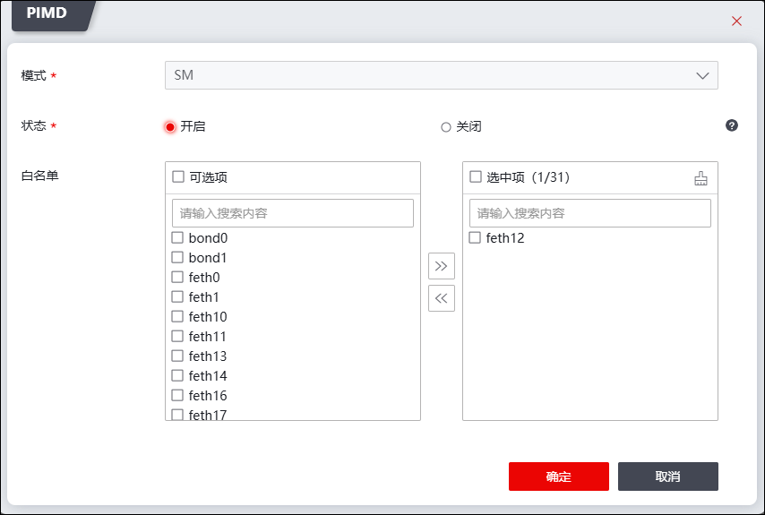
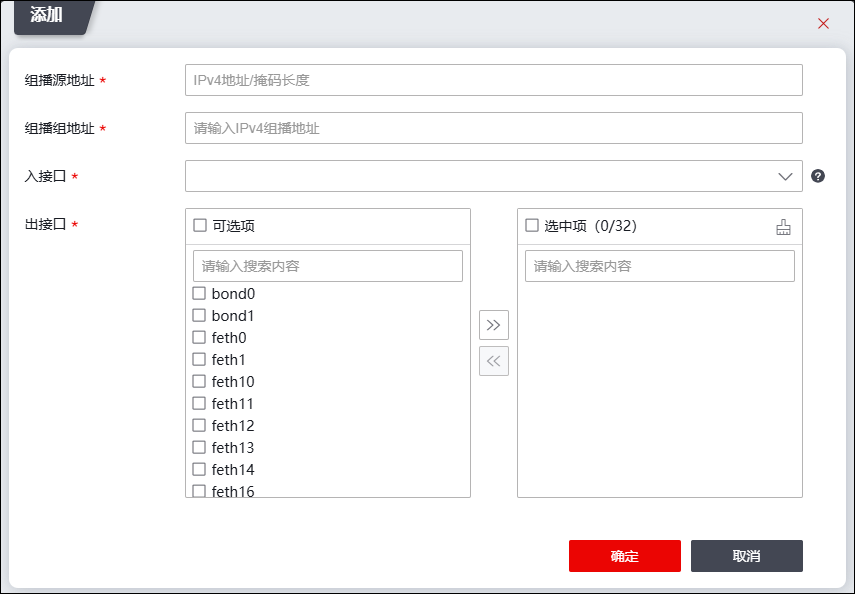

NGFW支持PIM组播（Protocol Independent Multicasting，协议无关组播），PIM作为一种IP网络中的组播路由协议，以单播路由作为支撑，自动构建组播转发表（S,G），将网络中的组播数据流发送到有组播数据请求的组成员所连接的组播设备上。PIM组播有PIM-SM和PIM-DM两种模式：
ØPIM_SM（协议无关组播_稀疏模式）：一般应用于组播组成员分布相对分散、范围较广的大中型网络，使用“拉（Pull）模式”传送组播。该模式下会假设所有主机不需要接收组播数据，组播源只向明确提出需要组播数据的主机发送。实现组播转发的核心技术是构造并维护共享树，选取根节点，通过组播源、根节点、连接接收者的路由器，从共享树切换到最短路径树，最终构建组播源到接收者的最短路径树。PIM_SM较PIM_DM能够以更经济的方式构建组播转发的最短路径树。
ØPIM_DM（协议无关组播_密集模式）：一般应用于组播成员较为集中、且数量较多的小型网络，采用“扩散-剪枝”方式构建最短路径树传输组播。该模式下会假设网络中的每个子网都存在组播组成员，组播数据首先扩散到网络中的所有节点，然后对没有组播接收者的分支进行剪枝，被剪枝的节点提供超时机制，可以周期性地恢复成转发状态，为减少被剪枝分支恢复转发状态所需时间，支持嫁接机制主动恢复接收者的分支。
NGFW通过组播转发表（S,G），决定转发或丢弃收到的组播包。组播转发表项包括：源地址/网络、组播地址、入接口、出接口。NGFW的组播转发表项包括动态组播转发表项和静态组播转发表项，动态组播转发表项通过PIM协议自动学习、更新，静态组播转发表项由管理员手工添加而成，不随网络状态变化而改变，静态组播转发表项优先级高于动态组播转发表项。
NGFW接收到从某个源地址发送过来的组播包后，检查组播转发表，组播转发表无匹配项，丢弃组播；转发表有匹配项，根据不同的查找结果处理报文。
Ø匹配静态组播转发表项
如果报文实际来源接口与静态组播路由表项匹配，就根据路由转发表项的“出接口”转发组播报文；否则，丢弃组播报文。
Ø匹配动态组播转发表项。
如果组播报文实际来源接口与组播转发表项匹配，就根据转发表项的“出接口”转发组播报文；否则，进行RPF检查。RPF检查若通过，则修改动态组播转发表项的“入接口”，然后根据修改后的转发表项的“出接口”转发组播报文；如果未通过，丢弃组播报文。
另外，NGFW除了通过组播转发表决定是否转发组播外，为了缩小组播的传输范围也支持三种组播定界功能，以此限定组播的传输范围（接口组播定界的配置详见 接口 的属性配置），包括：
ü组播定界TTL阈值
ü组播定界Scope-ID（仅用于IPv6组播）
ü组播定界IP地址
l配置NGFW动态组播路由
| 步骤1 | 将接口加入组播进程 |
进入NGFW的CLI界面，将接口加入组播进程： #network pimd_dev add feth1,feth2 /*feth1,feth2为NGFW路由模式接口，多个接口间使用逗号分隔*/ /*开启PIM后，防火墙默认开启IGMP功能，版本为IGMPv2。*/ |
|---|
| 步骤2 | 设置组播模式并开启组播功能。 |
1）点击组播转发表项列表上方『PIMD』，弹出界面如下图所示。

2）选择PIM组播模式，然后开启状态开关以及白名单（白名单指支持PIM协议的接口），点击【确定】按钮。
l配置NGFW静态组播路由
| 步骤1 | 选择 ，默认激活“IPv4组播”页签，进入IPv4组播路由配置界面。 |
| 步骤2 | 配置组播静态转发表项。 |
1）点击组播转发表项列表上方【添加】，弹出如下图所示的界面。

各项参数的具体说明如下表所示。
参数 |
说明 |
|---|---|
组播源地址 |
必填项，指定组播的源地址，格式：IPv4网络地址/子网长度。 |
组播组地址 |
必填项，设置组播组的IP地址。 |
入接口 |
如果指定源主机发送的组播包从该指定入接口进入NGFW，NGFW会根据出接口转发组播包；否则，NGFW会直接丢弃该组播包，不向外转发该组播包。 |
出接口 |
选择NGFW转发组播包的出接口。出接口与入接口不能配置相同的接口。 |
2）参数设置完成后，点击【确定】按钮。